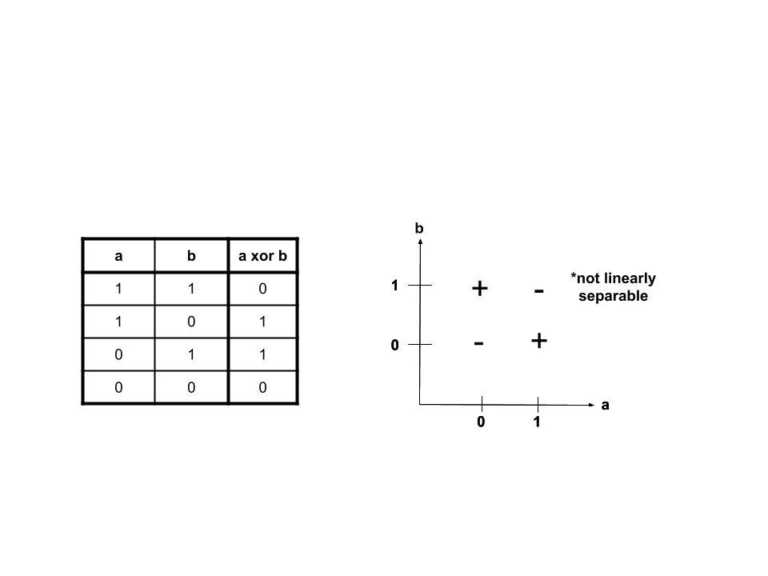
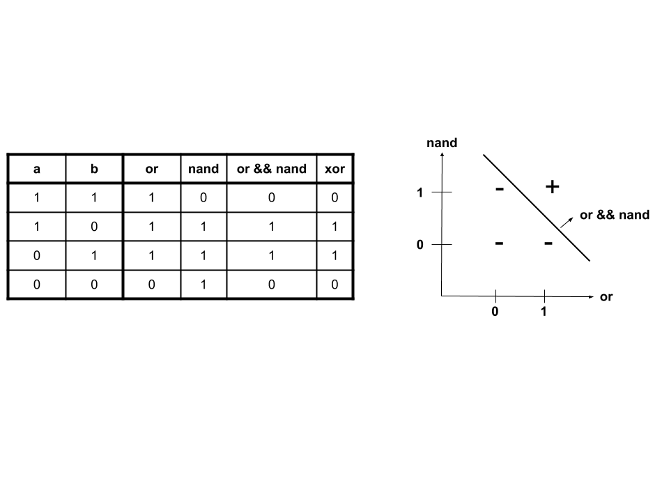
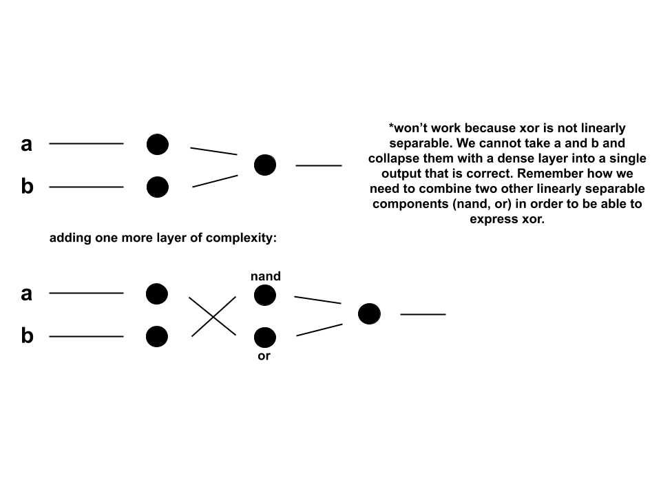
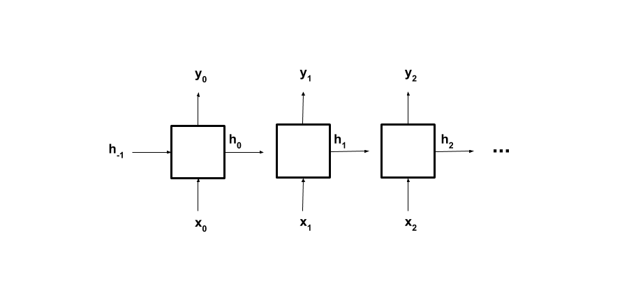
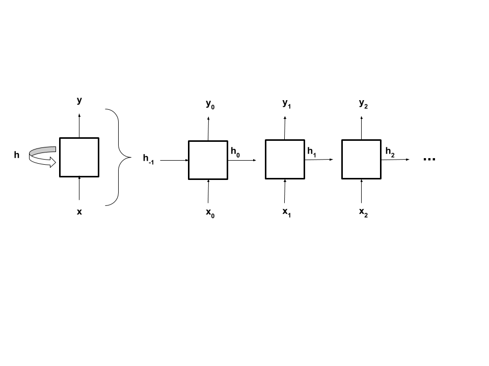

RNNs¶
Use of RNNs¶
After being exposed to CNNs in the vision module, we will start working with recurrent neural networks, RNNs. Why do we need a different type of NN? Different NNs are good at learning different types of problems.
What if we wanted our NN to learn how to distinguish between a series of \(0\)’s and \(1\)’s that has an odd number of \(1\)’s from one that has an even number? We can try it with a dense neural network, but it will not be able to learn to classify the sequences. We can try tweaking the NN and how we train it, but much progress is not possible because the structure of the simple dense NN is not conducive for learning this classification.
Think about it this way: what if a human was given such a sequence and asked whether it was even or odd? Some would count the number of \(1\)’s. If the number is even, then the sequence is even. Others would likely keep a toggle switch while parsing through the sequence: one that flips each time a \(1\) is encountered. The problem with the simple dense network is that it can’t remember. There is no storing of information about the input itself, so it can’t store the number of \(1\)’s or whether a sequence was even or odd until a given point. That’s where RNNs come in. RNNs are good for dealing with sequences because they have a memory system, which is referred to as the hidden state.
Before we can train a RNN to classify these sequences as even or odd, let’s break down the problem into a simpler subproblem that can be solved with a dense NN: \(xor\), which stands for “exclusive or”. \(xor\), denoted ^, is a logical operator, just like \(and\), denoted &&, and \(or\), denoted ||. \(a\) \(xor\) \(b\) will be true, or \(1\), if exactly one of \(a\) or \(b\) is true/\(1\).

When the \(a\) \(xor\) \(b\) is plotted, it becomes clear that \(xor\) is not linearly separable. This means that there is not one line that we can draw on the graph that will separate the trues from the falses. However, we can take a look at \(nand\), “not and”, and \(or\), which are linearly separable. \(nand\) is again a logical operator. It can be thought of as being composed of two other logical operators: \(not\), denoted \(!\), and &&. \(a\) \(nand\) \(b\) is equivalent to \(!\)(\(a\)&&\(b\)).

When we take a closer look, we find that the values bound by \(nand\) and \(or\) can give us those wanted from \(xor\).

\(xor\), when expressed in terms of \(nand\) and \(or\), is linearly separable:

In terms of a dense neural network, this means that if we have another step, which allows for interaction between the \(nand\) and \(or\), the \(xor\) problem can be learned. This corresponds to having two weight terms, which results in one for computing the \(nand\) and one for computing the \(or\). The third and final set of weights will combine the \(nand\) and \(or\) by &&’ing them to produce \(xor\). Think about it this way: a dense layer is linear because the matrix of its weights is a linear function, like all matrices. The non-linear activation function only weights the underlying linearity. This is why two steps (computing \(nand\) and \(or\), then combining them) are required.

Now that we have the \(xor\) problem solved, we can apply it to the sequence classifying. The toggle method from earlier is where \(xor\) comes in. A sequence is even, represented by \(1\), so far if the current digit is \(1\) and the the sequence until now is odd. It is also even if the current digit is \(0\) and the sequence until now is even. This can be represented as: evenness of sequence so far = current digit \(xor\) evenness of sequence until now.
Implementing a Simple RNN¶
Now to translate this to a RNN. The hidden state should hold evenness so far, and as we saw due to the non linearly separable nature of the \(xor\), we will need to store both the previous \(or\) and \(nand\). This corresponds with the hidden state having a dimension of two. It will not always be so straightforward when it comes to deciding the dimension of a hidden state since most problems aren’t strictly linear like this one, and the precise contents the hidden state will store will not be known beforehand. In most cases, a rough ballpark for the dimension of the hidden state is what is known.
Our simple (aka “Vanilla”) RNN will look like this:
\(h_t\) is the hidden (or recurrent) state of the cell and \(x_t\) is the sequence-element at step-\(t\), for \(t=0, 1, \dots, T-1\) (with \(T\) as the length of our sequence). \(y_{T-1}\) is the final output. The \(W\) and \(b\) parameters, the weights and biases respectively of the dense layer, are the learnable parameters of our model. These equations thus say that the new hidden state (\(h_t\)) combines current input (\(x_t\)) and the previous hidden state (\(h_{t-1}\)), then applies an activation function (\(f_h\), e.g., \(\tanh\) or \(\text{ReLU}\)). The output (\(y_t\)) is then a function of the new hidden state (not necessarily applying the same activation function).
Graphically, the Vanilla RNN looks like this:

Note that the RNN produces a result at each time step which signifies the evenness of the sequence so far. While we are only using the result from the last iteration because we only want to know the classification of the whole sequence, there are applications that use all or more of the outputs. For example in “sequence tagging”, the parts of speech of each word in a text can be labeled with the output from each iteration.

Backpropagation¶
The way a RNN learns is with backpropagation through time, or BPTT. Think of this as unrolling the forward pass of a RNN for a number of time steps, or the length of the sequence with shared weights. The way backpropagation is programmed remains the same as before which is nice.

Nulling gradients ensures that they don’t accumulate over time and cause large changes in the weights that do not correspond to the current state of the model. Because of the sequential nature of RNNs (each step is dependent on the previous steps), backpropagation takes a lot of time and memory. This makes nulling gradients even more important!
Turing-Complete¶
RNNs are Turing-complete, which means that they can represent any program. In other words, RNNs can perform any computable function. This is a parallel to how CNNs were able to approximate or represent functions given some fixed number of inputs by the Universal Approximation Theorem. In stricter terms, for every algorithm, there is at least one finite RNN that can implement it. The RNN takes in and returns binary data. These RNNs have a fixed number of iterations and are structured like the simple RNN we saw earlier. These will have a piecewise linear approximation of a sigmoid as an activation function. The slope of the function will always be zero or undefined, and this corresponds to no learning. As a result, weights and biases have to be predetermined. This means that the structure of a RNN is conducive to representing any program, without having to learn to approximate it. As an exercise, we will manually determine the weights and biases for the RNN to solve the even-odd sequence classification from above.
Variations of RNNs¶
Lastly, there are some variations in how RNN cells are formulated. Some don’t apply an activation function to the output. Some first compute output as a function of the current state and input, and then update the current state to be this output. The structure of the RNN we looked at is from around the 1990s, and a lot of progress has been made since.
The Vanilla RNN was many-to-one in that it took in the input of a digit at each iteration and produced a one-digit end result signifying even/odd (we ignored the outputs of the previous iterations). We could implement a one-to-many RNN. An example of a use for one is taking in one image and outputting a variable length caption. Another option is the many-to-many, which takes in inputs during multiple iterations and outputs during multiple iterations as well. An example of this is the sequence-tagging from above. The RNN we used for the sequence classifying could be one as well, if we were interested in the evenness of the sequence at each iteration.
The key similarity between all RNNs is that output is ultimately a function of input and a hidden state which is dependent on previous inputs.